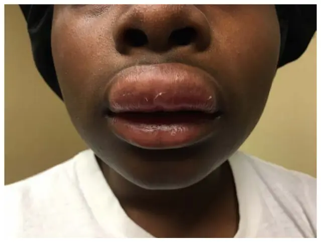

نسخه استخراجشده؛ ترجمه یا تأیید علمی انجام نشده است. وضعیت: captured
مردی ۴۰ ساله چند دقیقه پس از بیحسی سطحی بنزوکائین و اینفیلتراسیون، لب بالا و پلکهایش ورم کرده است و میگوید «گلویم کمی تنگ است». این ورم از چه جنسی است و چقدر فوری است؟

ورم خودش بیماری نیست؛ نشانهی یک مشکل زمینهای است. پیش از درمان، علت را پیدا کن:
بیشتر ورمهای ناشی از بیحسی فقط درد، اختلال کار ناحیه و شرمندگی بیمار میآورند. ولی ورم زبان، حلق یا حنجره تهدیدکنندهی حیات است؛ در آنژیوادم ارثی درماننشده، ۱۵ تا ۳۳٪ بیماران از انسداد راه هوایی با ادم حنجره مردهاند.
اشتباه رایج: ورمی که دقیقهها پس از بیحسی سطحی در لب، پلک یا زبان با تنگی گلو میآید را «ضربهی سوزن» بدانی. این آلرژی است تا خلافش ثابت شود. پیشگیری از همهی ادمها: شرح حال پزشکی کامل، تکنیک کمآسیب و نگهداری درست ابزار و کارپول.